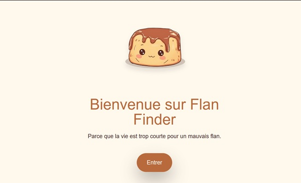
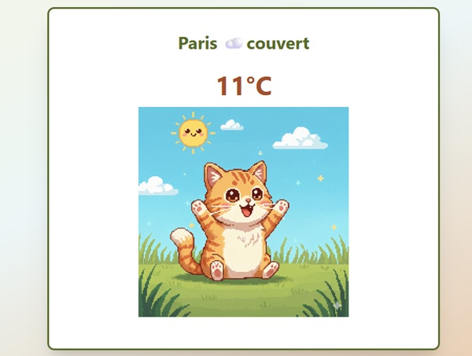
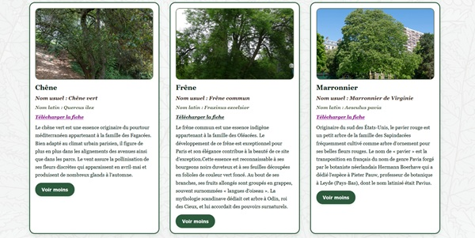

Emilie Gainon
Développeuse Web Fullstack Junior
Après 10 ans à organiser et classer l’information comme documentaliste, j’ai eu envie de passer de l’autre côté : non plus seulement utiliser des structures de données, mais les créer moi-même en code.
À propos
Pendant plus de dix ans, j'ai organisé, structuré et rendu accessible l'information. Aujourd'hui, je construis les outils qui permettent de la faire vivre.
En reconversion dans le développement web après une expérience en tant que documentaliste, je me forme actuellement à Ada Tech School, où j'apprends à concevoir des applications en JavaScript, React et Node.js à travers des projets concrets et collaboratifs.
Ce que j'aime dans le développement, c'est autant la résolution de problèmes que la construction d'interfaces utiles et accessibles. Mon parcours m'a appris à être rigoureuse, autonome et attentive aux besoins des utilisateurs — des compétences que je mets aujourd'hui au service du code.
Je recherche une alternance à partir de juin 2026 pour continuer à progresser et contribuer à des projets qui ont du sens.
Compétences
Issue du domaine de la documentation, j’ai développé rigueur et sens de l’organisation, que je complète aujourd’hui par une grande curiosité, une forte adaptabilité et un goût pour le travail collaboratif.
 HTML5
HTML5
 CSS3
CSS3
 JavaScript
JavaScript
 TypeScript
TypeScript
 React
React
 Node.js
Node.js
 Express
Express
 SQL
SQL
Projets

Flan Finder
Application fullstack permettant de trouver les meilleurs flans autour de soi.

Météo Chat
Application météo interactive qui affiche la météo d’une ville… accompagnée d’un chat adorable adapté au temps qu’il fait.

Arbres remarquables
Application frontend permettant de visualiser et explorer les arbres remarquables de Paris à partir de l’API Open Data Paris.